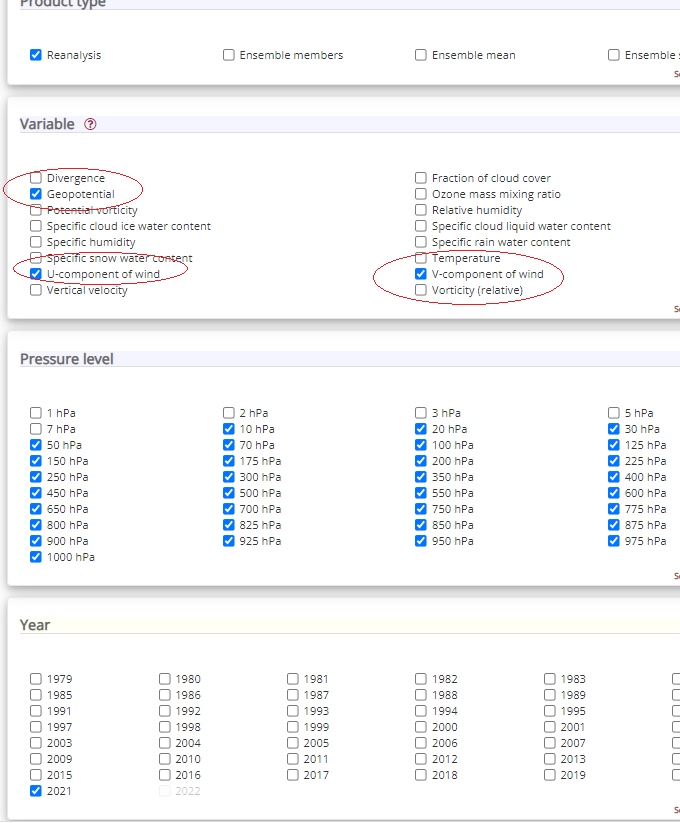
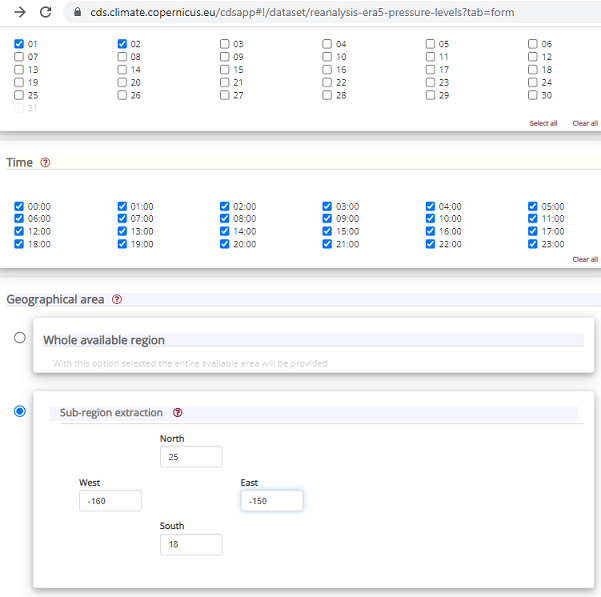
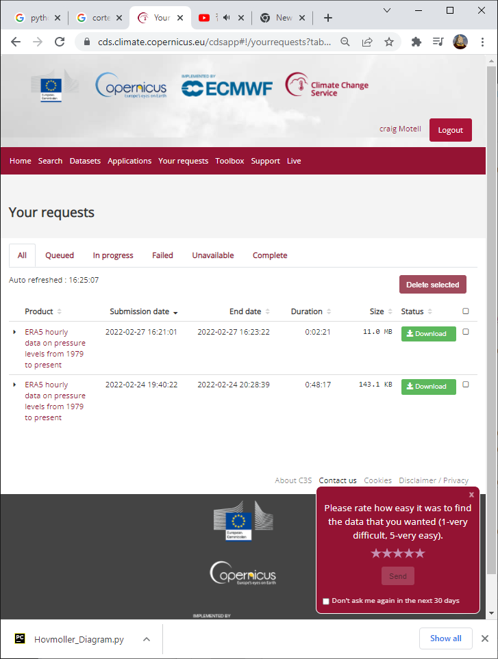

Downloading ERA5 Forecasts
Important
Note From September 26, 2024, the legacy CDS and legacy ADS are decommissioned and no longer accessible. CDS-Beta and ADS-Beta have officially become the new CDS and the new ADS. The new CDS and ADS also use an updated GRIB to netCDF conversion, which causes slight differences in both formatting and data.
EarthSHAB still expects the Pre Sep 2024 ERA5 structure for running trajectories. Use the ERA5-Utils toolkit to convert the new CDS ERA5 files into the expected format. This toolkit can also be used to download Complete ERA5 reanalysis (more pressure levels) via API.
Overview
ERA5 is ECMWF’s fifth-generation global atmospheric reanalysis dataset, providing hourly estimates of atmospheric variables from 1979 to present.
Reanalysis combines numerical weather prediction models with observational data to produce a physically consistent estimate of the atmosphere over time. ERA5 is the standard benchmark for historical analysis and trajectory simulations.
ERA5 reanalysis data from the European Centre for Medium-Range Weather Forecasts (ECMWF) is accessed via the Copernicus Climate Data Server.
Required Variables
EarthSHAB requires the following variables across all pressure levels:
Geopotential (
z)U-component of wind (
u)V-component of wind (
v)Temperature (
t)
Note
ERA5 data is available at hourly resolution, which provides finer temporal fidelity than GFS (typically 3-hour intervals).
Let’s say you want data over the Hawaiian Islands for January 1-2, 2021, then a typical selection would look like:


Be sure to select NetCDF (experimental) for the download format to use with EarthSHAB.
The data download request is then added to a queue and can be downloaded a later time (typically only takes a few minutes). Save the netcdf reanalysis file to the forecast directory and feel free to rename the file to something more useful.
Note
ECMWF reanalysis data is available every hour unlike GFS which is avilable in 3 hour increments.
The download option will look like the following:
